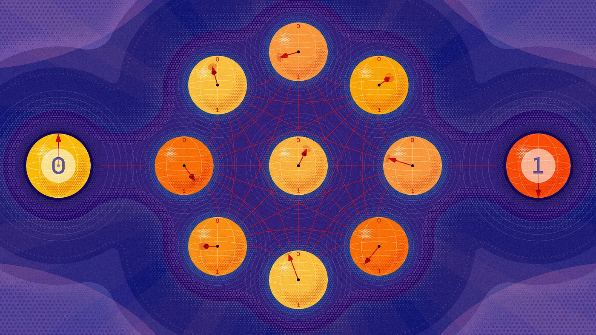

Introduction: A Series on Quantum Error Correction

Quantum computers have the potential to revolutionise computing, harnessing two unique properties, entanglement and superposition, to solve problems that are practically intractable for classical computers. For instance, factorising large numbers: while this is believed to be computationally intractable for any classical computer, Shor’s algorithm run on a fault-tolerant quantum computer could do it in polynomial time. But there’s a catch!
Quantum information is extraordinarily fragile. A qubit, unlike a classical bit, doesn’t just sit quietly in a 0 or 1 state. It lives in a delicate superposition state, sensitive to the faintest whisper of heat, stray electromagnetic fields, or even cosmic rays passing through the hardware. The environment is constantly trying to destroy your computation. This is called decoherence, and it is the central obstacle standing between us and a fault-tolerant quantum computer.
Without error correction, a quantum computer running for even a few milliseconds will accumulate enough errors to make its output meaningless. Raw physical qubits, no matter how carefully engineered, are simply not reliable enough to run the deep circuits that make quantum computing interesting.
The solution, at least in principle, is quantum error correction (QEC). The idea is: encode the information of one qubit using multiple qubits, in such a clever way that errors can be detected and corrected without ever learning what the qubit’s state actually is. The moment you measure a quantum state to check it, you collapse it. QEC has to thread a needle — diagnosing errors indirectly, through carefully chosen measurements that reveal what went wrong without revealing what the data is.
That this is even possible is remarkable. That it has been proven to work, both theoretically and experimentally, is one of the great intellectual achievements of the past thirty years.
What this series is about
This series tells the story of quantum error correction from the ground up. No shortcuts, no hand-waving. We start with classical error correction, not as a warmup, but because the contrast with the quantum case is genuinely illuminating. The moment you try to apply classical intuitions to quantum information, you run into three obstacles that seem, at first, to make error correction completely impossible. Working out why those obstacles aren’t fatal is where the interesting physics begins.
From there, we build up the theory piece by piece: the first quantum codes, the algebraic framework that unifies them, and eventually the surface code — the code that Google, IBM, and Microsoft are all betting on as the path to fault-tolerant quantum computing. We won’t just describe it. We’ll simulate it, decode it, and measure its performance numerically.
By the end, you’ll understand not just how quantum error correction works, but why it’s structured the way it is, and what still has to be solved before a fault-tolerant quantum computer becomes real.
Who is this for?
If you’ve encountered quantum computing before and found the explanations either too shallow or too buried in formalism, this series is for you. The goal is to build a real understanding of why quantum error correction is structured the way it is.
You’ll need to be comfortable with linear algebra and complex numbers. Beyond that, no prior quantum mechanics is assumed. Some articles are more mathematical, others more computational. The code examples are in Python.
The story of quantum error correction is, in many ways, the story of whether large-scale quantum computing is possible at all. It sits at the intersection of physics, mathematics, computer science, and engineering in a way that few fields do.
Let’s dig in.